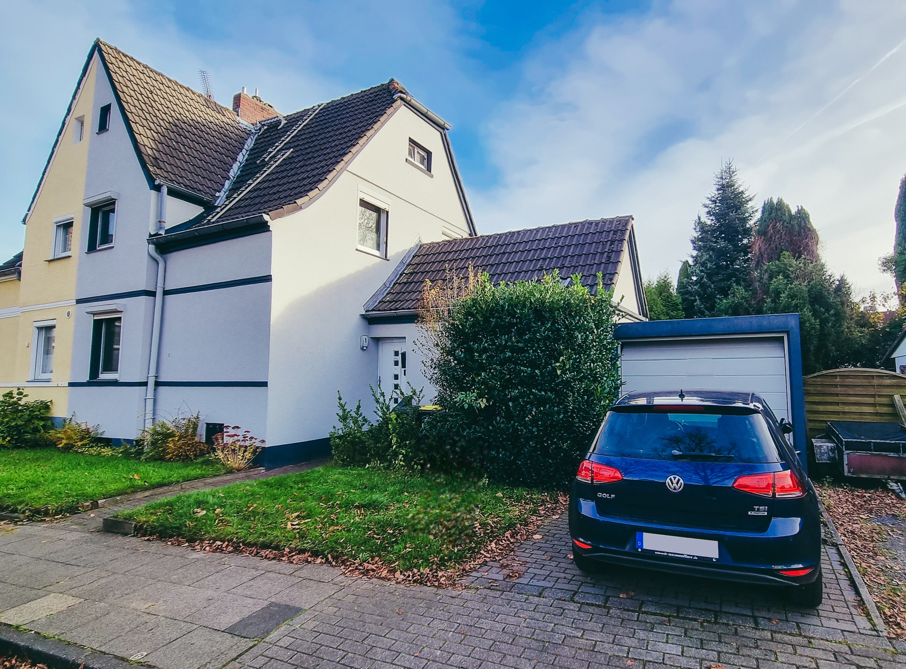
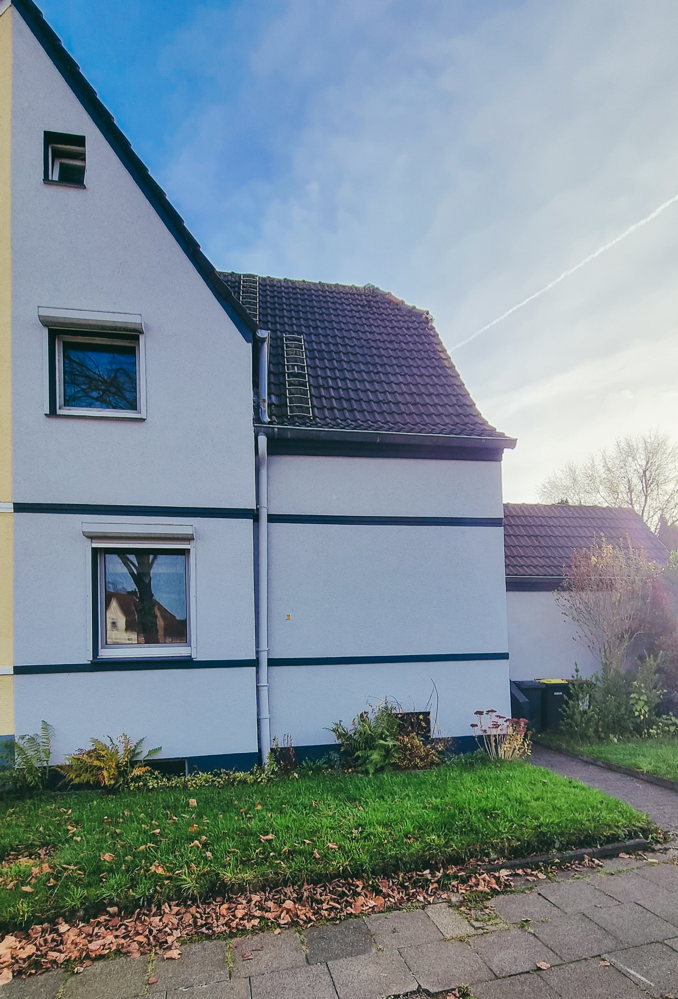
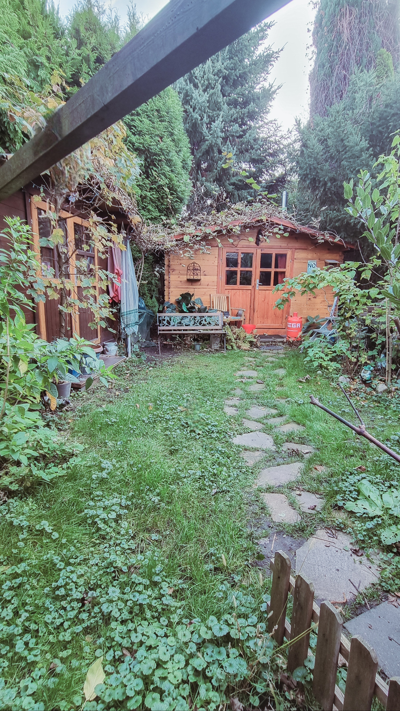

Galerie




Erstellt von Tom Specka - Bewerbungs-Exposé
Diese charmante Doppelhaushälfte aus dem Jahr 1918 liegt in einer ruhigen Wohnstraße von Herten und verbindet klassischen Wohnkomfort mit einem Garten, der eine natürliche Atmosphäre bietet. Auf ca. 75 m² Wohnfläche verteilen sich drei gut proportionierte Zimmer, die sich flexibel nach den eigenen Bedürfnissen einrichten lassen.
Das Wohnzimmer und die Küche sind separate Räume. In der Küche befindet sich ein praktischer Essbereich, der sich ideal für kleinere Mahlzeiten oder entspannte Kaffeerunden eignet. Das modernisierte Bad aus dem Jahr 2022 rundet das Raumangebot ab.
Besonders attraktiv ist der sonnige Garten mit überdachter Terrasse, der zu entspannten Stunden im Freien einlädt. Das Haus bietet eine solide Basis für Paare oder kleine Familien, die Wert auf eine ruhige Lage und klassische Raumaufteilung legen.
Herten liegt im nördlichen Ruhrgebiet (Kreis Recklinghausen, Regierungsbezirk Münster).
Die Stadt profitiert von ihrer zentralen Lage im Ballungsraum Rhein-Ruhr. Gute Autobahnanbindungen (A2, A43) verbinden Herten mit Dortmund, Essen und Düsseldorf. Das wirtschaftliche Umfeld ist von Dienstleistung, Gewerbe und Naherholung geprägt.
Die Stadt bietet solide Infrastruktur, Schulen, Einkaufsmöglichkeiten und eine gute Anbindung an regionale Arbeitgeber. Der Immobilienmarkt ist stabil mit durchschnittlichen Kaufpreisen zwischen ca. 1.900-3.000 €/m², abhängig von Lage und Zustand der Immobilie.
Die Talstraße in Herten ist eine ruhige Wohnstraße mit überwiegend gepflegten Mehr- und Einfamilienhäusern. In der direkten Umgebung befinden sich ein kleiner Spielplatz, Supermärkte, Restaurants und Dienstleistungsbetriebe. Schulen und Kindergärten sind in wenigen Minuten erreichbar, ebenso Bushaltestellen mit Anschluss an das Stadtzentrum und die umliegenden Stadtteile.
Die Lage ist für Familien durch kurze Wege, wenig Durchgangsverkehr und gute Anbindung an Freizeit- und Grünflächen besonders attraktiv. Die ruhige Seitenstraßenlage vereint Wohnqualität und Stadtnähe auf gelungene Weise.
| Baujahr: | 1918 |
| Wohnfläche: | ca. 75 m² |
| Grundstück: | ca. 312 m² |
| Zimmer: | 3 |
| Heizung: | Gas |
| Energieausweis: | Energieausweis in Vorbereitung |
| Einzugstermin: | Nach Vereinbarung |